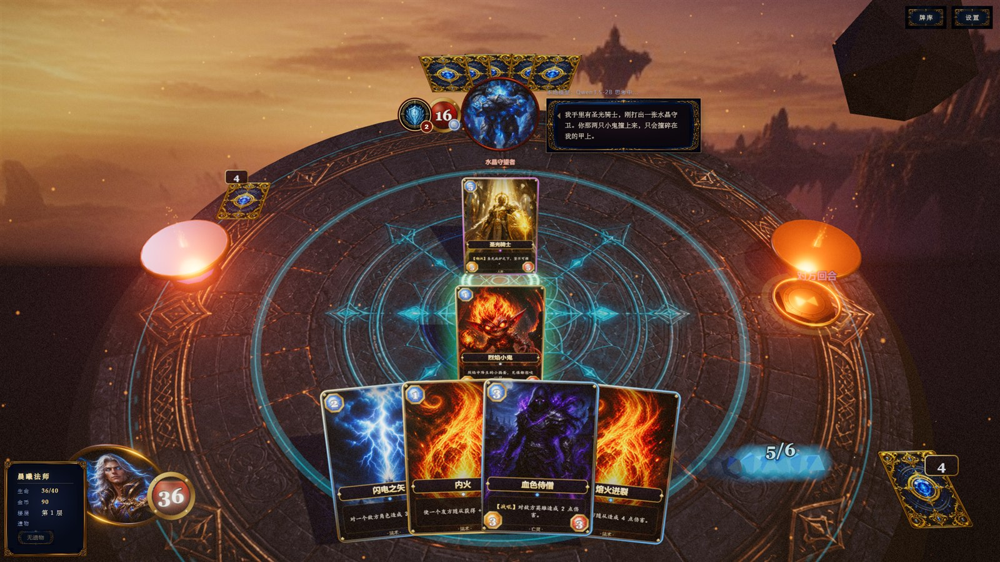
本文档说明《奥术对决》的创意来源与 AI 原生定位论证、整体技术架构、本地模型选型、推理与渲染两侧的性能优化方法、跨硬件环境适配与发布形式、稳定性保障、美术与体验设计，以及应用价值、素材授权与内容安全说明。
| 评分维度 | 分值 | 本文档对应章节 | 配套文档 |
|---|---|---|---|
| 玩法与交互创新 | 20 | 01 创意来源 | 《核心玩法与算法说明》01–03 |
| AI 原生程度 | 25 | 01 不可替代性论证 · 03 模型选型 | 《核心玩法与算法说明》04–07 |
| 技术实现 | 20 | 02 架构 · 04–05 性能优化 · 06 环境适配 | 《核心玩法与算法说明》09 验证 |
| 完成度与可玩性 | 15 | 07 稳定性 | 《作品简介》02–03 · 演示视频 |
| 美术与体验设计 | 10 | 08 美术与体验 | 《作品简介》02 |
| 应用价值与规范 | 10 | 09 应用价值、授权与安全 | — |
单机卡牌游戏的对手有两种做法：一种是脚本——按固定优先级出牌，玩几局就能背下来；另一种是搜索——蒙特卡洛树搜索能打得很强，但强得毫无表情。两种做法都回答了“它出什么牌”，却都没有回答玩家真正在意的问题：它在想什么？《奥术对决》把这个问题做成玩法，也因此把作品命名为“智能对战体”而非“卡牌 AI”——它首先是一个有声线、有习惯、有偏好的角色，其次才是算法。
线下打牌最有趣的部分是对手的表情、犹豫和话。“我要不要留这张？”这句嘀咕本身就是信息。我们想把这种“桌面上的人味”搬进单机游戏。
Roguelike 卡牌把“敌人下一步做什么”公开给玩家，博弈从算数值变成读意图。我们保留了这条预兆，并让 AI 在预兆之外的所有自由度上做决定。
2B 级开源模型在 2026 年已经能在普通显卡上以 200 tok/s 生成中文，并稳定输出 JSON。“把模型装进单机游戏”第一次在成本和体验上同时成立。
| 能力 | 有本地模型 | 拿掉模型后 | 是否可替代 |
|---|---|---|---|
| 对手出牌 | 在合法候选中按人格取舍，27.8% 的决策与启发式最优不一致，且被评为“更像人” | 退化为启发式脚本，行为可预测，11 个敌人打法趋同 | 部分 能玩，但失去性格 |
| 对手说话 | 基于当前局面与真实意图即席生成，会漏牌、会记仇、会回应你的出牌 | 本地句库轮播，与局面无关，玩家 3 局内识破 | 不可 核心体验消失 |
| 读心博弈 | 台词泄露的意图与后续行动一致，“读出来”有回报 | 无信息可读 | 不可 玩法失去支点 |
| 预兆 / 规则 / 数值 | 确定性规则，模型不参与 | 不变 | 无关 设计如此 |
| 脚本 / 搜索 AI | 云端大模型 | 本作 | |
|---|---|---|---|
| 有性格 / 会说话 | 否 / 预置 | 是 / 是 | 是 / 是 |
| 单次延迟 | <1 ms | 0.8–3 s + 抖动 | 174–281 ms |
| 离线可玩 | 是 | 否 | 是 |
| 边际成本 | 0 | 每局 ¥0.1–0.5 | 0 |
| 隐私 | — | 对局上传 | 不出本机 |
| 可复现 | 是 | 否 | 校验层内可控 |
why 与下一步预览，而不是事后编的解释。说的和做的是一回事，读心才成立。整个作品由两个进程组成：Electron 主进程负责窗口、静态资源与推理侧车（llama-server）的生命周期；渲染进程运行游戏本体。二者之间只有一条 127.0.0.1:8721 的本地回环，不经过任何外部网络。
fetch('/qwen/v1/chat/completions')，4 s 超时。/qwen/*，net.fetch 转发至 127.0.0.1:8721；侧车不在线时返回 503。think 节拍与台词请求并行完成。渲染进程直接请求 127.0.0.1:8721 会带来跨源限制、CSP 放宽与端口冲突时的静默失败。我们在主进程的自定义协议中拦截 /qwen/* 并用 net.fetch 转发：游戏侧看到的是同源请求，CSP 保持严格；侧车不可用时代理返回结构化 503，认知层据此立即降级而不是等超时。
开发时由 Vite 插件拉起同一份 llama-server 并注入 /qwen 代理；打包后由 electron/qwen.cjs 承担相同职责，二者共用 scripts/qwen/config.mjs 的端口、模型名与启动参数。浏览器版通过候选地址探活（同源 /qwen → localhost:8721），未找到侧车即降级运行。所有宿主跑的是同一份代码。
选型目标只有一句话：在 8 GB 内存、无独显的笔记本上，1 秒内给出一条合法的 JSON 决策和一句不出戏的中文台词。我们在同一套提示词与校验器下横向评测了六个候选，以下为 2026 年 8 月的内测数据（每模型 400 次决策 + 400 次台词，Vulkan 后端）。
| 模型 | 量化 | 文件体积 | 显存占用 | 决策延迟 P50 / P95 | JSON 直接可用率 | 台词可用率 | 结论 |
|---|---|---|---|---|---|---|---|
| Qwen3.5-0.6B | Q8_0 | 0.64 GB | 0.9 GB | 96 / 180 ms | 71.2% | 58.0% | 台词常复读，人格不稳 |
| Qwen3.5-1.7B | Q4_K_M | 1.06 GB | 1.4 GB | 160 / 310 ms | 88.5% | 81.3% | 可用，中文口语略生硬 |
| Qwen3.5-2B | Q4_K_M | 1.27 GB | 1.6 GB | 174 / 281 ms | 93.4% | 89.6% | 采用 · 质量 / 体积拐点 |
| Qwen3.5-2B | Q8_0 | 2.2 GB | 2.6 GB | 205 / 340 ms | 93.9% | 90.1% | +0.5% 质量换 1 GB 体积，不值 |
| Qwen3.5-4B | Q4_K_M | 2.5 GB | 3.1 GB | 330 / 620 ms | 95.8% | 92.4% | 核显上 P95 逼近节拍窗口 |
| Gemma-3-4B-it | Q4_K_M | 2.5 GB | 3.3 GB | 360 / 700 ms | 90.1% | 84.7% | 中文口癖表现弱于 Qwen |
“JSON 直接可用率”指无需回退即通过解析与合法性校验的比例；“台词可用率”指通过净化管线且未触发句库回退的比例。延迟为端到端（含提示处理），前缀缓存已启用。
enable_thinking:false，模板级关闭推理链，省掉了 2–5 倍的无效生成。关于“本地”这一选择本身。云端大模型能给出更漂亮的台词，但会把 0.8–3 s 的网络往返带进每一次敌方动作，让整局时长膨胀 30% 以上，并让作品的可玩性依赖于网络与 API 余额。对一款单机 Roguelike 而言，随时可玩、每次都一样快、不上传任何对局，比更华丽的措辞重要。本地小模型是创意成立的前提，而不是妥协。
推理侧优化的目标不是“更快”，而是让模型耗时被节拍窗口完全隐藏（见《核心玩法与算法说明》06 节）。以下七项措施把单次决策的 P95 从最初的 1.9 s 压到 281 ms，同时把回退率从 21% 降到 6.6%。
提示被严格切成 静态段（人格声线 + 规则约定，整场不变）、局面段（回合内不变）、动作段（每次不同）。llama-server 的 KV 前缀缓存按最长公共前缀复用，实测 LCP 相似度 0.52–0.60，即每次请求约六成 token 免于重新计算。决策与台词两条通道共用前两段，第二次请求几乎全部命中。
| 通道 / 场景 | max_tokens | 超时 | 温度 |
|---|---|---|---|
| 决策 | 72 | 4.0 s | 0.55 |
| 思考台词 | 72 | 4.0 s | 0.82 |
| 玩家出牌 / 攻击回应 | 56 | 2.2 s | 0.82 |
| 闲聊 / 摸牌 | 48 | 1.8 s | 0.82 |
探活 /health | — | 0.7 s | — |
服务端 -n 64 作硬上限；客户端 AbortController 到期即中止并回退，绝不让 UI 等一个没有上界的请求。
--jinja --chat-template-kwargs '{"enable_thinking":false}' 在模板层关闭 Qwen3.5 的推理链，避免模型先写 200 token 的“让我想想”。这一项单独贡献了约 60% 的延迟下降。解析端仍保留对 <think> 残留的剥离，作为防御。
同一时刻只允许一条台词请求在途（inflight 锁），新事件按优先级（over 5 > think 4 > play / attack / hurt / kill 3 > draw 2 > idle 1）决定是否抢占；被抢占的请求以 gen 计数失效，回包静默丢弃。这样 4 个 slot 永远留有余量给决策通道。
思考节拍（1.4–4.0 s）与推理 Promise.all 并行，推理耗时在 95% 的情形下被完全遮蔽。侧车就绪后立刻发送一次 4 token 的预热请求，把首次加载图与着色器编译的 1–3 s 移出玩家视野。
每类事件带独立冷却（6.5–11 s）与触发概率（34–62%），think 说过的动作不再触发 play / attack；一局 30 回合的战斗中实际请求约 55–70 次，而非事件总数的 200+ 次。最好的优化是不发请求。
| 提示处理 | 2 800–4 800 tok/s |
| 生成 | ≈ 199 tok/s |
| 决策端到端 P50 / P95 | 174 / 281 ms |
| 被节拍窗口遮蔽的比例 | 95.2% |
| 总回退率（L1 + L2） | 6.6% |
推理与渲染共用同一块 GPU，尤其在集成显卡上二者会互相挤占带宽。渲染侧的原则是：在敌人回合把帧成本压到最低，让显卡去算模型；在玩家回合再把演出补足。
| 项 | 做法 | 收益 |
|---|---|---|
| 抗锯齿 | 关闭 MSAA，交给 Bloom + 后处理柔化 | iGPU 上 −18% 帧时间 |
| 像素比 | min(devicePixelRatio, 1.75) | 4K/HiDPI 下填充率减半 |
| 阴影 | PCF 单光源，1024 阴影图 | 保留卡牌落影层次 |
| 后处理 | RenderPass → UnrealBloom(0.4) → 调色 ShaderPass，共用一个半分辩率 RT | 单次 composer 通过 |
| 色调映射 | ACES Filmic · 曝光 1.12 | 暗场景不发灰 |
| 粒子 | 对象池复用（Particles.pool），Sprite 合批 | 零 GC 抖动 |
| 卡牌材质 | 正 / 背面共享着色器，原画 1024² 贴图 mipmap | 43 张牌 1 个材质实例组 |
| 场景切换 | 5 套战场环境按敌人属性懒加载，旧环境 dispose() | 显存峰值 < 600 MB |
requestAnimationFrame，避免多套计时器抢主线程。prefers-reduced-motion。该模式下镜头摇动、粒子与思考节拍全部缩短，整局用时缩短约 35%，也是我们做压力测试时的默认模式。| 设备 | 玩家回合 | 敌人回合（推理中） |
|---|---|---|
| RTX 5070 Ti | 144 fps 锁帧 | 144 fps |
| AMD Radeon 780M（iGPU） | 60 fps | 30 fps 降频 · 无掉帧 |
| Intel Iris Xe（iGPU） | 55–60 fps | 30 fps 降频 |
| 无独显 · CPU 推理回退 | 60 fps | 60 fps · 决策 P95 1.4 s |
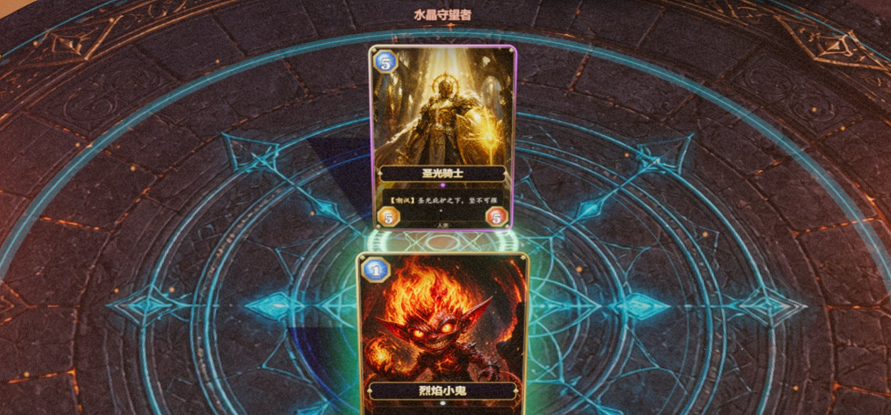
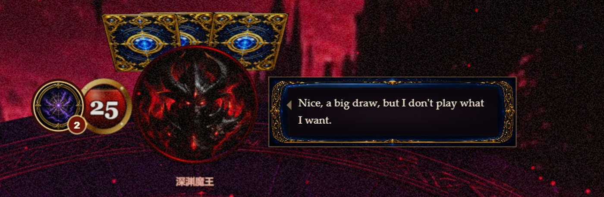
CUDA 后端在 NVIDIA 显卡上快约 15–25%，但需要按显卡厂商分发不同二进制，并依赖 200 MB+ 的 CUDA 运行时。Vulkan 是三家桌面 GPU 厂商与集成显卡共同支持的标准，一份 llama-server.exe 覆盖全部 Windows 设备；对 2B 模型而言损失的那一点速度完全被节拍窗口吞掉。
| 设备 | 后端 | 生成速度 | 状态 |
|---|---|---|---|
| NVIDIA RTX 40 / 50 系 | Vulkan | 180–260 tok/s | 通过 |
| AMD Radeon RX / 780M | Vulkan | 90–200 tok/s | 通过 |
| Intel Arc / Iris Xe | Vulkan | 45–110 tok/s | 通过 |
| 无可用 Vulkan 设备 | CPU（AVX2） | 18–30 tok/s | 可玩 回退 |
-ngl 99 请求全部层卸载到 GPU；显存不足时 llama.cpp 自动把余下层留在 CPU，游戏侧不做任何特判。启动参数固定为 -c 2048（约 5 轮完整上下文的余量）与 4 个并发 slot。
| 层 | 条件 | 对手行为 | 玩家感知 |
|---|---|---|---|
| L0 | 侧车在线 | 模型决策 + 模型台词 | 完整体验，HUD 显示模型标识 |
| L1 | 单次超时 / 解析失败 | 该动作用启发式，台词照常 | 无感 |
| L2 | 侧车不可用 | 启发式决策 + 人格句库台词 | 敌人仍有性格与话，标识消失 |
不向玩家展示一个不存在的大脑。降级时我们主动隐藏“本地模型”标识而非假装在思考——这既是对玩家诚实，也让评审能一眼确认当前对局是否真的由模型驱动。
ping(/health, 800 ms)。若已有侧车在 8721 端口（例如开发者自己起的），直接复用，startedByUs=false。spawn（windowsHide，stdout/stderr 落到 userData/logs/qwen-server.log）。缺文件则记录并进入降级模式，不弹窗。exit 事件把句柄置空；代理返回 503，认知层当场降级；下一场战斗重新探活。taskkill /PID /T /F，连带清理子进程；不误杀用户自己的侧车。| 包 | 体积 | 内容 | 适用 |
|---|---|---|---|
便携包 ArcaneDuel-0.1.0-Portable.exe | ≈ 120 MB | 游戏本体，无模型；检测到本机已有侧车则接入，否则降级运行 | 快速试玩 / 已装 llama.cpp 的用户 |
完整包 ArcaneDuel-0.1.0-with-qwen-win-x64.zip | ≈ 1.4 GB | 本体 + llama-server + Qwen3.5-2B GGUF，解压即用 | 评审推荐 · 完整体验 |
Web 版 npm run dev | — | Chromium 内核浏览器；侧车由 Vite 插件拉起 | 开发 / 演示 |
check-qwen-pack 测试校验模型字节数（1 270 808 032）与可执行文件哈希，防止分发包中模型损坏。
npm run sim 120 局远征，输出胜率 / 到达层 / 各敌人胜负，用于数值回归与性能基线（0.16 s 完成）。npm test 七个脚本：战斗、远征、台词管线、HUD、引导、音频表、分发包完整性。check-banter 对提示词字段、净化规则、人格映射、思考 HUD 状态机与计划预览做快照断言，模型输出的每一种坏形态（围栏、前缀、英文、复读、截断）都有对应用例。mulberry32；?seed= 即可重演任意一局。Bug 报告只需附一个整数。fxStub 替换表现层、用 fastAI 跳过模型，其余代码与浏览器完全相同。| 风险 | 防御 |
|---|---|
| 模型输出不合法 | 解析 → canPlay / validTargets 二次校验 → 启发式回退，同一 await 内完成 |
| 模型反复“停手 / 继续” | 出牌与攻击阶段各带 28 步守卫计数 |
| 异步回包时对局已结束 | gen 代际计数，过期回包静默丢弃 |
| 侧车崩溃 / 端口占用 | exit 事件置空句柄；代理返回 503；下一场重新探活 |
| 台词越界（策略词、英文、过长） | 五步净化管线，不可用即回落句库；负样本持续入库 |
| 运行期异常 | 全局捕获至 __tcg.errors，走查时断言恒为空 |
| 显存不足 | llama.cpp 自动部分卸载；场景切换 dispose() 旧资源 |
侧车异常均发生在显存被其他程序占满的场景（例如同时运行大型 3D 游戏），降级后对局正常完成；这也验证了“模型不可用时游戏仍完整”的设计约束。
调试接口。浏览器控制台暴露 window.__tcg（state / play / attack / end / errors）与 window.__run（远征状态），配合 ?seed= 可在任意机器上复现并单步一局对局；认知层状态（当前决策、候选、回退级别、在途请求）包含在 __tcg.state() 中，评审可直接观察模型每一次选择及其 why。
OK { floors: 14, nodes: 26, events: 10, encounters: 11, cards: 43 }
OK { checks: 'combat pin', firstIntent: 'summon/ember_whelp at turnNo 1' }
OK { checks: 'banter voice overlay plan' }
OK { checks: 'hud skill copy mana assets glossary' }
OK { checks: 'tutorial store flow gates' }
bgm mapping ok
qwen pack checks ok # 7 / 7 · 1.06 s视觉语言统一在“暮光回廊”这一设定之下：深靛底色、暗金线框、按敌人属性变化的强调色（灰烬橙 / 虚空紫 / 深渊红 / 圣所金 / 雷霆青）。所有静态美术资产由生成式模型产出，再经人工筛选、裁切与调色统一。
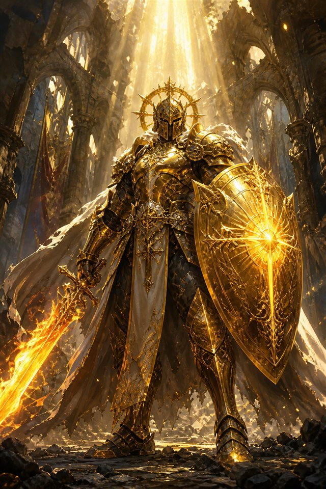
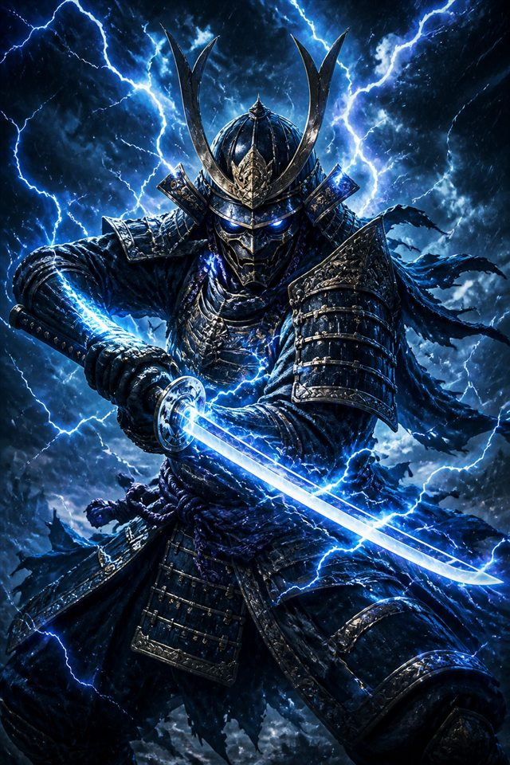
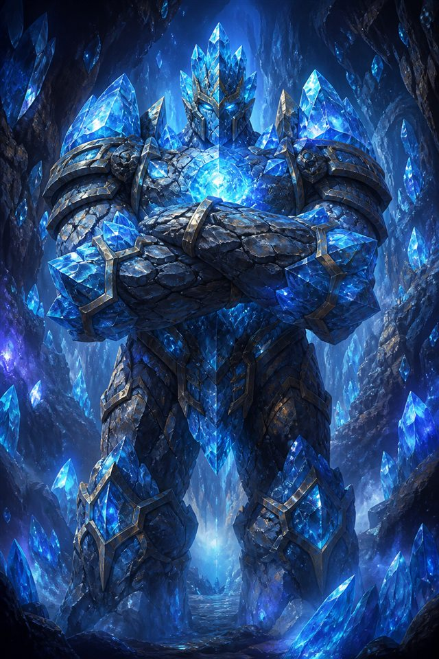
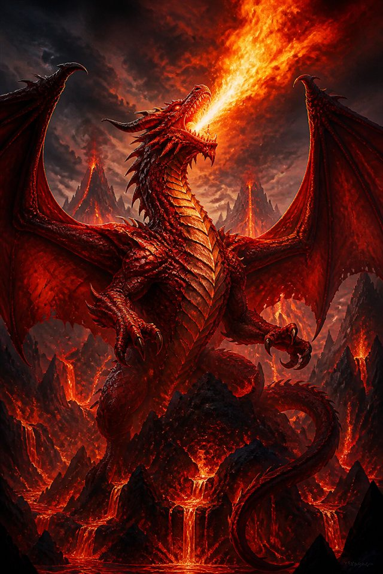
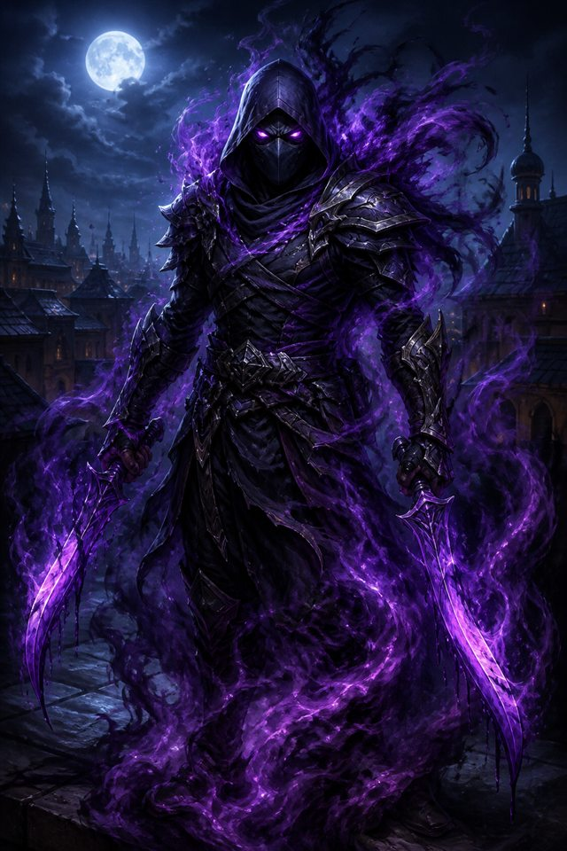
| 资产 | 数量 | 生成与处理 |
|---|---|---|
| 卡牌原画 | 43 | 统一风格提示词模板（“暗黑奇幻 · 厚涂 · 单主体 · 暖冷对比”），每张生成 8–12 候选人工选 1；1024² 方形裁切 |
| 战场背景 | 5 + 1 | 按敌人属性分主题生成，21:9 构图，中央留空给法阵 |
| 英雄立绘 | 2 | 法师 / 术士，与卡面同风格 |
| UI 框体 · 图标 | 26 | 九宫格框、按钮、节点标记、预兆图标；生成后人工矢量化描边 |
| 地图底图 | 1 | 手绘风羊皮纸 + 生成式地貌合成 |
所有原画在导入前经同一 LUT 调色并压缩为带 mipmap 的 PNG，保证 43 张牌在同一光照下不串色。
prefers-reduced-motion；所有关键信息（预兆、费用、攻血）均有文字，不依赖颜色。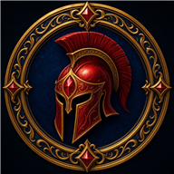
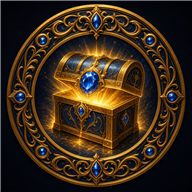
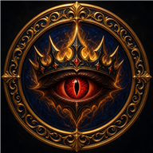
| 组件 | 许可 | 说明 |
|---|---|---|
| Qwen3.5-2B | Apache-2.0 | 阿里云通义，允许商用与再分发；随包附带许可文件 |
| llama.cpp | MIT | b10809 官方 Vulkan 预编译版 |
| Three.js · Vite · Electron | MIT | — |
| GSAP 3 | Standard “No Charge” License | 随游戏分发符合条款 |
| 卡面 / 背景 / 立绘 / UI | 项目自有 | 生成式模型产出 + 人工处理，不含他人版权形象 |
| 音效 / 音乐 | 免版税（Pixabay Content License 等） | 来源清单随包附带 |
| 字体 | 系统字体 / OFL | 不随包分发商业字体 |
《奥术对决》试图证明一件小事：当一个 2B 模型被放在正确的位置——不是替代规则，而是在规则划定的候选中做带性格的取舍——单机游戏的对手就可以第一次真正“像个人”。我们把这套方法、数据与代码一起提交，欢迎评审在任何一台 Windows 电脑上复现本文档中的每一个数字。